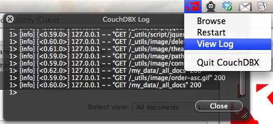

CouchDBX is a nice little Mac OS X tool to run CouchDB without the need to set up Erlang or anything.
<center></center>
<hr />

<ul class="posts">
{% for post in site.posts %}
  <li><span>{{ post.date | date_to_string }}</span> &raquo; <a href="/couchdbx/{{ post.url }}">{{ post.title }}</a></li>
{% endfor %}
</ul>